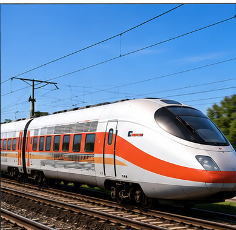
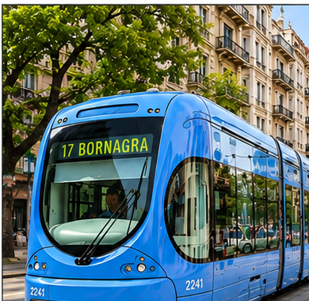
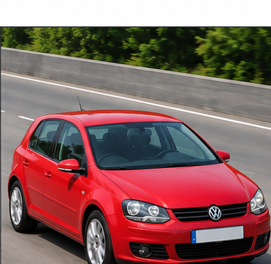
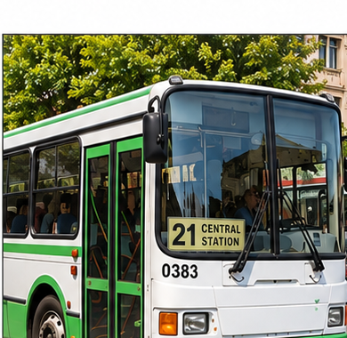
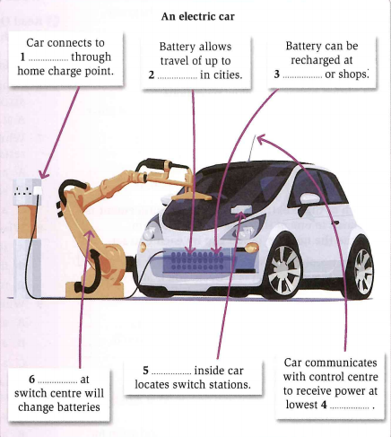

Wordlist — Getting From A to B
These words come up throughout today's tasks on transport and travel.
| word / phrase | meaning | example | common collocations |
|---|---|---|---|
| commute | to travel regularly between home and work | She commutes over an hour each way, every day. | a long/daily commute |
| congestion | overcrowding, especially of traffic | Traffic congestion here gets much worse during rush hour. | traffic congestion; ease congestion |
| fare | the money paid to travel on public transport | The bus fare has gone up twice this year. | a bus/train fare; fare increase |
| punctual | arriving or happening at the exact expected time | The rail service here is known for being punctual. | remarkably punctual |
| hazardous | dangerous, involving risk | Cycling in heavy traffic without a helmet can be hazardous. | hazardous conditions/journey |
| convenient | suitable and easy, causing little trouble | The new tram stop is far more convenient for commuters. | convenient location/route |
| pedestrian | a person travelling on foot, rather than by vehicle | The city widened its pavements to make more room for pedestrians. | pedestrian crossing/zone |
| infrastructure | the basic physical systems a place relies on (roads, bridges, etc.) | The country urgently needs to invest in its transport infrastructure. | transport/road infrastructure |
| sustainable | able to continue long-term without damaging the environment | Electric buses are seen as a more sustainable option than diesel ones. | a sustainable alternative/solution |
| commuter | someone who regularly travels between home and work | Commuters here often complain about delays during rush hour. | daily/rush-hour commuters |
Match each word to its definition.
1. congestion —
2. fare —
3. infrastructure —
4. hazardous —
5. sustainable —
B dangerous, involving risk
C overcrowding, especially of traffic
D able to continue long-term without damaging the environment
E the basic physical systems a place relies on, like roads and bridges
Read this short text. All ten words from the table are highlighted.
Anyone who has to commute into a big city knows the frustration of congestion during rush hour — roads packed with cars, and every fare on public transport somehow going up each year regardless. A truly punctual bus or train service can make a huge difference, especially compared with a hazardous daily journey by bike through heavy traffic. Cities that plan well tend to make life more convenient for everyone: wider pavements for pedestrians, better cycle lanes, and transport infrastructure that's actually built to last. Increasingly, city planners are looking for more sustainable options too, since a growing number of commuters would rather not add to a city's pollution just to get to work.
True or false?
1. A pedestrian is someone travelling by car.
2. If a train is punctual, it usually arrives late.
3. A sustainable solution is one that could damage the environment over time.
4. Roads, bridges, and railways are all examples of infrastructure.
5. A hazardous journey is one that is completely safe.
Describing Transport
For each picture, write at least 30 words describing that form of transport, using at least two superlatives (e.g. the fastest, the most convenient, the cheapest). The first one is done for you as an example.

Example:
The train is probably the fastest way to travel long distances on land, and it's often the most comfortable option too, since passengers can walk around, work, or even sleep during the journey instead of sitting still the whole way.



Speaking Part 1 — Transport
Answer each question naturally, as you would in a real IELTS Speaking Part 1. You only get one attempt per question, so make sure you're ready before you start recording.
Useful chunks for these questions
- I usually get around by...
- it depends on the distance / the time of day
- it's much more convenient to...
- the traffic can get pretty heavy around...
- I'd say the most common way to get around is...
- I ended up being stuck in traffic for...
- to be honest, I think it could be improved
Article — Flying Cars: How Close Are We?
Read the article below, then answer the questions that follow.
For decades, flying cars have been a symbol of the future — a promise made by films and cartoons that never quite arrived. Today, however, several companies around the world are building working prototypes, and some believe personal flying vehicles could become a genuine transport option within the next ten to twenty years.
Unlike a helicopter, most of these vehicles are designed to take off and land vertically, using multiple small rotors instead of one large one. This makes them quieter and, in theory, safer, since the vehicle can still fly even if one rotor fails. Several prototypes have already completed short test flights carrying a single passenger, reaching speeds of over 150 kilometres per hour.
Despite this progress, serious challenges remain before flying cars could be used by ordinary people. Battery technology is still not powerful enough to allow long flights, meaning most current designs can only travel short distances before needing to recharge. There are also major questions about safety regulations: unlike cars, which mostly stay on the ground, flying vehicles would need entirely new rules to prevent accidents in crowded city skies.
Perhaps the biggest obstacle, though, is cost. Early flying cars are expected to be extremely expensive, putting them well beyond the reach of most people for years to come. Some companies hope to solve this by offering flying taxi services instead of selling vehicles directly, allowing passengers to book short flights across a city rather than owning a vehicle themselves.
Whether flying cars eventually become as common as regular cars is still uncertain. What does seem clear is that our cities, and the way we think about getting from A to B, may look very different within a generation.
Are the following statements TRUE or FALSE, according to the article?
1. Flying cars are already a common form of transport today.
2. Most flying-car prototypes use one single large rotor, similar to a helicopter.
3. One advantage of using multiple rotors is that the vehicle can keep flying even if one of them fails.
4. According to the article, battery technology is already advanced enough for long flights.
5. Some companies are planning to offer flying taxi services rather than selling flying cars directly to individuals.
Vocabulary Preview
Match each word to its definition. You'll see all of these words in the reading passage next.
1. existing —
2. urban —
3. vehicle —
4. renewable energy —
5. zero emissions —
6. efficiency —
7. link —
8. ensure —
B make a connection between two or more people, things, or ideas
C make certain that something is done or happens
D something such as a car or bus that takes people from one place to another
E when someone or something uses time and energy well
F which exist or are used at the present time
G power that comes from a source which is naturally replaced, such as wind or sunlight
H when no gas is sent out into the air
Reading Passage — The Electric Revolution
Read the passage and answer all 10 questions inside.
Label the diagram.
Use information from the passage to complete the gaps below.

1. Car connects to through home charge point.
2. Battery allows travel of up to in cities.
3. Battery can be recharged at or shops.
4. Car communicates with control centre to receive power at lowest .
5. inside car locates switch stations.
6. at switch centre will change batteries.
Speaking Part 2 — What's It About?
In IELTS Speaking Part 2, you're given a card with a topic and a few points to cover. You get 1 minute to prepare and make notes, then you need to speak for 1–2 minutes without stopping.
There are different types of Part 2 topics — some ask you to describe a person, some a place, some an object, and some, like today's, ask you to describe an experience or event.
Read this task and make notes.
Describe a journey you made where you learned something new.
You should say:
- what happened on the journey
- what forms of transport you used
- how you felt
and explain what you learned which was new.
Useful Phrases for Part 2
Which of the phrases below can you use to introduce the talk, introduce new points, or finish the talk? Some phrases may fit more than one question.
a. During the trip, I...
b. I'm going to talk about a trip I made...
c. Generally, I felt...
d. I learned a lot from the experience, especially...
e. Finally, I'd like to say that...
f. I travelled by...
1. Which phrase introduces the talk?
2. Which phrase introduces a new point?
3. Which phrase finishes the talk?
Speaking Part 2 — Your Turn
Now record your answer using the notes you made. Speak for at least 1 minute, just like in the real test.
Describe a journey you made where you learned something new.
You should say:
- what happened on the journey
- what forms of transport you used
- how you felt
and explain what you learned which was new.
⏱ This recording must be at least 1 minute long, or the platform won't let you move on — you'll be able to record it again if it comes out too short.
Reading Passage — The Rise of Self-Driving Buses
Read the passage and answer all 10 questions inside.